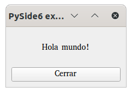

holamundo-pyside6
Hola mundo con PySide6.
Para ejecutar el hola mundo, necesitamos instalar antes Python3 y sus dependencias.
Clonamos el proyecto en local y entramos en la carpeta del proyecto
$ git clone https://github.com/di-mcgrawhill/holamundo-pyside6.git
$ cd holamundo-pyside6/
Instalación de Python3

Linux
Python3 viene preinstalado en la mayoría de distribuciones Linux, se puede comprobar si está instalado ejecutando la siguiente orden en una terminal:
$ python3 --version
De no estar instalada, se puede descargar desde aquí.
Para más información de como instalar, consultar la documentación.
Windows
Descargar el instalador haciendo clic aquí y seguir las instrucciones en pantalla.
Se dispone de más información sobre su instalación en el siguiente enlace
macOS
Se dispone del binario ejecutable en el siguiente enlace.
Se dispone de más información sobre su instalación en el siguiente enlace
Creación de un entorno virtual (venv)
Para crear un entorno virtual y poder aislar la ejecución del resto del sistema (sandbox), ejecutamos la siguiente instrucción en una terminal.
$ python3 -m venv venv
Activación del entorno virtual
Linux y macOS
$ source venv/bin/activate
Windows
$ venv\Scripts\activate.bat
Instalación de dependencias
$ pip install -r requirements.txt
Ejecución
python3 src/holamundo_pyside6/holamundo.py
Nos mostrará la aplicación holamundo_pyside6 en ejecución.
